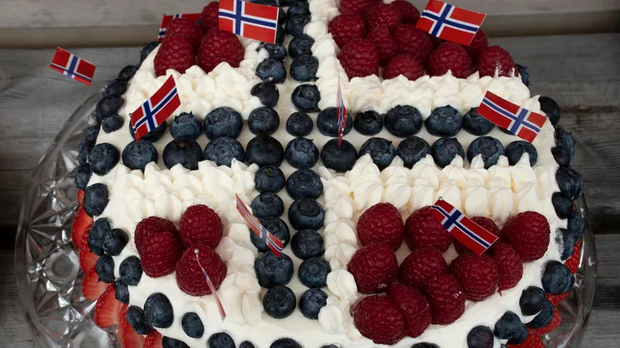

Cake

Description
This traditional Norwegian cake is as simple to make as it is delicious!
Ingredients
- 5 large eggs
- 2 cups suger
- 1/2 cup water
- 2.5 cups all purpose flour
- 2 tsp baking powder
- 1 tsp salt
- 3 cups whipping cream
- 1 cup strawberry
1 cup blueberry
Instructions
- Preheat oven to 325°F.
- In a mixewr beat together the suger and eggs until pale and fluffy
- Remove the bowl from the mixer and gradually stir the flower and baking soda in.
- put the batter in the cake pan and cook for 1 hour.
- Once the cake is cooled cut it in half, then power sherry and pinaple juice onoto cake.
- Coat the bottom in whipped cream and cover in fruits, then put the top oon the cake.
- Now ice the whole cake in whipping cream and cover in fruit.